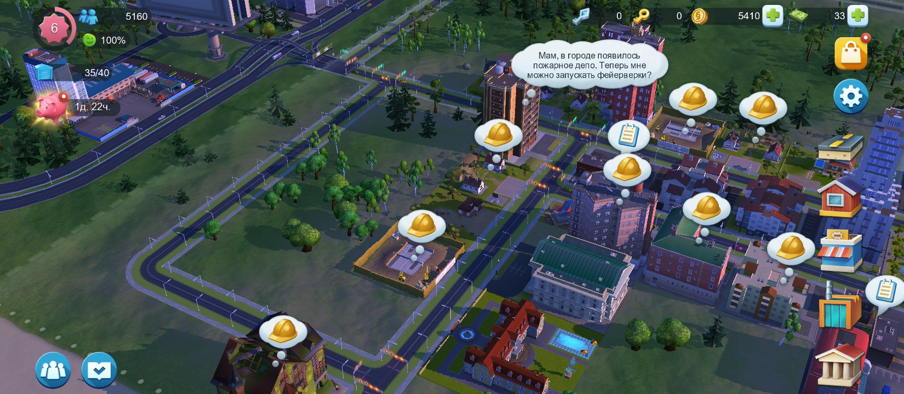

Скриншоты

Описание игры
Call of Duty — это серия популярных шутеров от первого лица, созданная студией Infinity Ward и издаваемая Activision. Первая часть вышла в 2003 году и была посвящена событиям Второй мировой войны. Со временем серия охватила разные исторические периоды и футуристические конфликты, включая холодную войну, современные военные операции и даже боевые действия в далёком будущем. Игры серии известны кинематографичным сюжетом, динамичным геймплеем и проработанным мультиплеером. Особенно популярны режимы "Королевская битва" (Warzone) и кооперативные задания. Call of Duty остаётся одной из самых успешных франшиз в индустрии видеоигр, собирая миллионы игроков по всему миру.